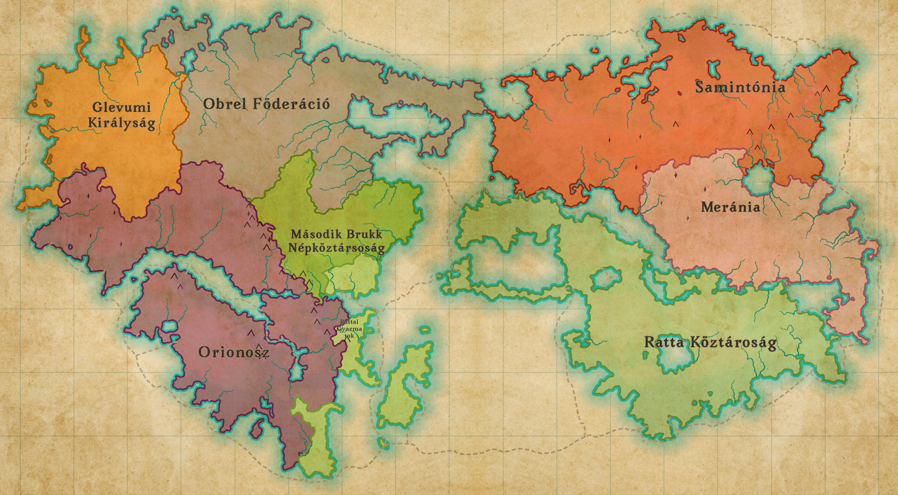

A történelem viharai ismét végigsöpörtek a kontinensen. Az egykor hatalmas Obrel Föderáció darabjaira hullott, és a hatalmi vákumot új országok és régi szövetségek próbálják betölteni. Kelet felől Meránia egyre agresszívabb politikát folytat, míg északon Samintónia a megmaradt földjeit próbálja megőrizni.Orionosz pedig a Brukki Népköztársoság és szövetségese a Ratta gyarmatainak a határán felállította katonaságát.
A Ratta Köztársaság viszonylag érintetlen maradt a politikai átrendeződésben, de rengeteg értékes terület vesszet ell Meránia kezébe emellet a határokon túl nyugtalanító hírek érkeznek. Gallovidia és Henneguwian új vezetése terjeszkedni akar, és egyesek szerint szemük már Ratta gazdag kikötőire vetült. A fővárosban, Sultaanában a tanács máris megosztott: egyesek katonai készültséget javasolnak, mások diplomáciai utakat keresnének.
A játékos feladata hogy a Ratta Köztársoság vezetője ként vezesse népét ,de az hogy ő a többi állam elnyomásával teszi ezt vagy vissza állítja az egyensúlyt az csak rajta múlik.